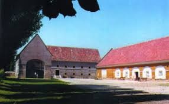
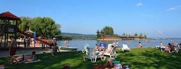

A sétálóutcává alakított Kossuth Lajos utcát nemes anyagokkal, gránitlapokkal, bazaltkockákkal burkolták. Számos műemlék jellegű és műemléki védettséget élvező épület található itt. Az épületek legnagyobb része a XIX. század második felében épült, a kor divatjának megfelelően romantikus vagy eklektikus stílusban. A sétálóutca végét a Georgikon és a meredek Szalasztó utcák keresztezik. A XX. század elejéig itt egy erecske csörgedezett, amelyen egy kőhíd (a Johannes-Brücke) vezetett át.
A Festetics család Magyarország egyik legjelentősebb grófi, majd hercegi családja. A horvátországi származású család a 17. századtól él Magyarországon, 1739-től Keszthelyen. Ekkor szerzi meg Festetics Kristóf (1696–1768) a keszthelyi birtokot és tartozékait, és az uradalmat választja birtokai központjának. Jelentős érdeme a kastély felépítése, ugyanakkor emellett sebészorvost és mestereket hozat a városba, valamint gyógyszertárat és uradalmi kórházat létesít.
Kristóf fia, III. Pál (1722–1782) Mária Terézia királynő udvari, majd kancelláriai tanácsosa. Ezt követően az udvari kamarához kerül, és a királynő bizalmasaként kidolgozza az Urbárium alapjait. Mária Terézia 1772-ben grófi rangra emeli, titkos tanácsosi címet kap és a magyar kamara alelnöke lesz. Politikai tevékenysége mellett létrehozza Keszthelyen az első elemi és középiskolát.

A Georgikon (régiesen Georgicon) a Festetics György gróf által alapított gazdasági tanintézet volt Keszthelyen; egyes épületeiben ma a Georgikon Majortörténeti Kiállítóhely működik, míg oktatási intézményként jogutódja a Pannon Egyetem Georgikon Kar.

A városi strand legjellegzetesebb épülete 1864-ben épült szigetfürdő. A Balaton partján egyedülálló módon korhű stílusban felújított épület 2007-ben nyerte el ismét méltó formáját, a rekonstrukciót követően. A létesítmény funkciójában is illeszkedik a strandhoz, amelyet a 21. századi igényeknek megfelelően, a legmodernebb technikai és építészeti megoldásokkal alakítottak ki. A strandbelépő ára tartalmazza a Balaton alakú élménymedence használatát is. A nyári hónapokban itt található a trópusi hangulatot idéző, zenés részben fedett szórakozóhely a Viviéra. A városi strand felújított vizesblokkokkal, igényes kiszolgáló egységekkel, több röplabda és strandfoci pályával, valamint modern játszótérrel várja a Balaton szerelmeseit.

Szolgáltatások: